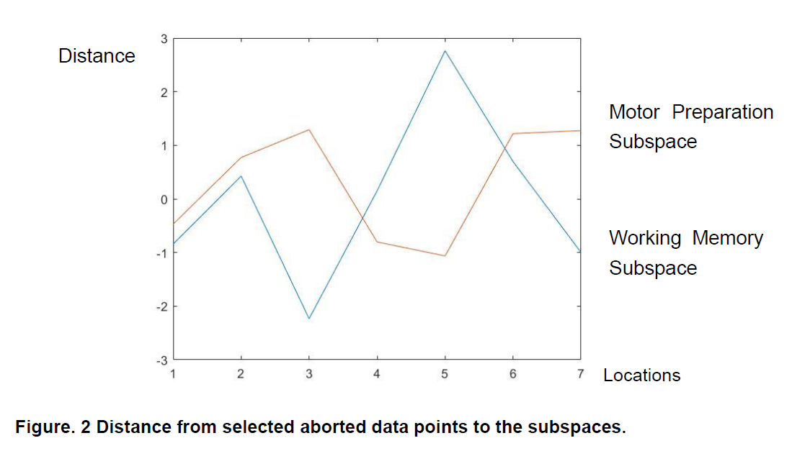

Study on the LPFC populational electrophysiology responses in error trials of a Working Memory behavior task
This project aims to reveal the populational neuron code pattern in errors trials which monkeys failed to give the correct response of the given task. Based on previous paper which describes a stable subspace in working memory in monkey LPFC, the project focuses on the 300ms pre-motor neuron activities in both LPFC and FEF.

In this project, PCA and LDA were used to define the subspaces and noise cancelling. Based on the PSTH, error trials or aborted trials usually occur in specific sessions of the behavior task. Further analysis is still in process.